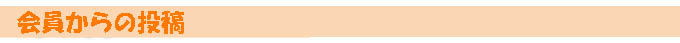
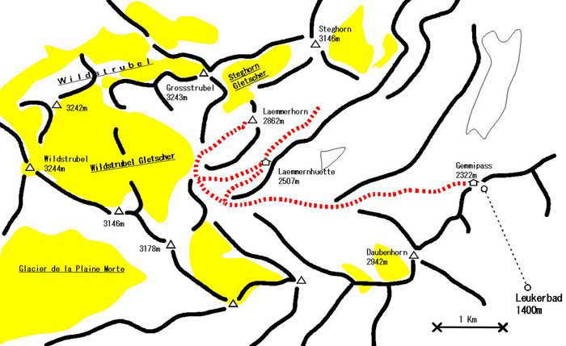
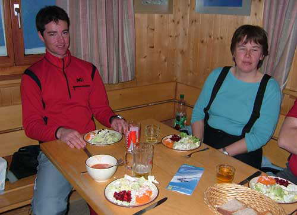
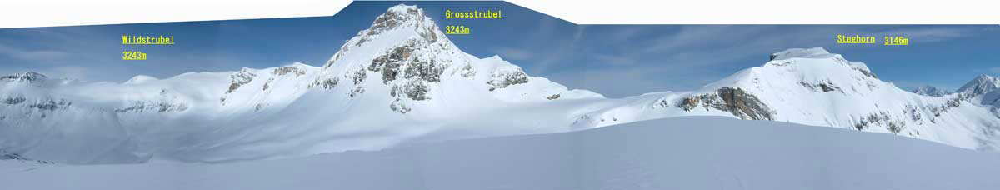
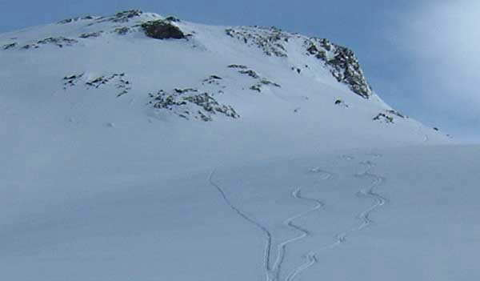
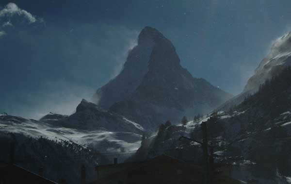
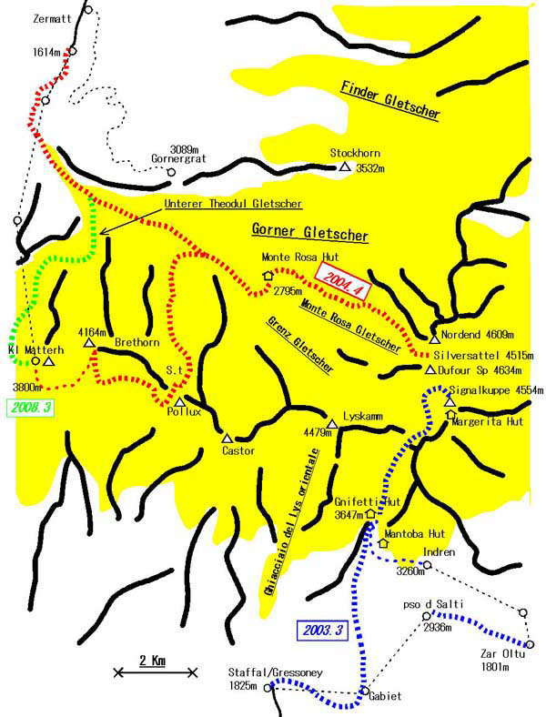
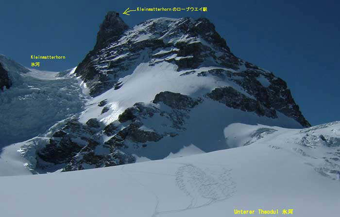

|
|||||||||||||||||||||||||||
|
|||||||||||||||||||||||||||
|  |
|
２００８ ヨーロッパ Alps 「寒波直撃」 |
| 実 施 日 | ２００８年３月２１日〜２７日 | |||
| リーダー | 片山 秀雄（個人山行） | |||
| 報 告 者 | 片山 秀雄 | |||
| 参加者数 | １名 （会員１名） | |||
| ４日間のJungfrau地区の現地ツアーに参加するためジュネーブへ向かう飛行機の窓からは曇りではあるが主な山々が見え、明日からのツアーの先行きに安堵する。
その夜はBrigの駅前ホテル泊り。 翌早朝携帯が鳴る。 ガイドから大雪で今日の ツアーは取り止め３日間に変更するという連絡。 驚いて窓のシャッターを開けると、昨日雪のかけらも無かった地面、屋根に雪が振り積もりなお激しく降っている。 その日は仕方なく一人でZermat Rothornのゲレンデを滑る。 今年はここもChamonixも、これまで雪が無くこの雪でもつけ刃。 夜再度の連絡で 雪崩の危険があり今回のツアーは中止という。 予定が無ければプライベート料金でアテンドすると言う。 他のツアー参加者はご当地スイス人なので中止でもそれだけだが、こちらは明日からどうするか頭が真っ白になっていたので、藁を掴む心境でOKする。 |
| ３月２２日〜２４日 |
| ２２日はツアー主催元のFieschのスキー場で滑る。 ここはAletsch氷河に面したEggishorn2927mから拡がる広いスキー場。 ガイドのRichardはスキーは何処でも２本くっつけてあたかもボードのように滑れと言う。 ２３、２４日はWildstrubelの山スキーを計画してくれた。 最高峰3253mの山群で北面に氷河群が在る。 Brigから車で西へ行き、Sustenから北へLeukerbadへ、そこからロープウエイでGemmmipass 2314mへ登る。 天候は未だ不安定で雪が僅かに降り続く。 雪のフラットな圏谷をシールを付けて長々と西に向かって歩く。 やがて崖の上に建つ小屋が見えてくる。 その下を通過し、先の傾斜の緩くなった所を西側から回り込むように登って、断崖の上に建つLaemmern huette 2501mに着く。 小屋に荷物を置き、東北の斜面を目指すが、降雪で途中で引き返す。 小屋では若いグループが、CDの教材(www.slf.ch [White Risk])を使って雪崩の研修をしていた。 翌朝は快晴午後から雪の予報。 小屋から更に西の圏谷の氷河の下端をかすめて通過し、Steghornに向けて深い新雪のラッセルを続けるが、天候が予報どうり変り始めたので、目標をLaemmerhorn2862mに変え登頂。 帰りはパウダーを滑り、さらに下の長いフラットな圏谷をクロカン走行で通過し、Genmmipassへ戻った。 振り返ると、雪で景色はもう何も見えなかった。 |
|  |
|---|
| Wildstrubelの地図 |
|  |
|---|
| ガイドのRichard |
|  |
|---|
| Laemmerhorn(2806m)からのパノラマ |
|  |
|---|
| Laemmerhornの滑降 |
| ３月２５日 |
| ２５日は、Chamonixの白野ガイドとTasch huetteへ行く予定であったが、小屋はオープンしているけれど雪で車道がクローズ。 やむ終えずZermatへ向かうが、強風でロープウエイ、リフトは停止。 唯一動く地下ケーブルでSunegaへ、そこからシールをつけてRothorn下まで登る。 |
|  |
|---|
| 強風のMatterhorn |
| ３月２６日 |
| ２６日は、ロープウエイでKlein Matterhornまで上がり、UnterTheodul氷河を滑る。 昨日の強風で雪が飛ばされたので、パウダーは薄かった。 でも、そこそこに快適な滑りでGorner氷河に合流する。 氷河の末端は昔と様子が変わっていた。 |
|  |
|---|
| UnterTheodul Gletscher地図 |
|  |
|---|
| UnterTheodul 氷河の滑降 |
| かくて６日間の滞在は終わったが、今回は大変な出費となってしまった。 ツアーはオリジナル４日間のガイド料が８万円。 一方プライベートガイド料１日５万円、３日でガイド料だけで１５万円。 いかにツアーがお得かが分かる。 とんだ寒波の被害であったが、これは何時でも覚悟して置かなければならないのだ。 |